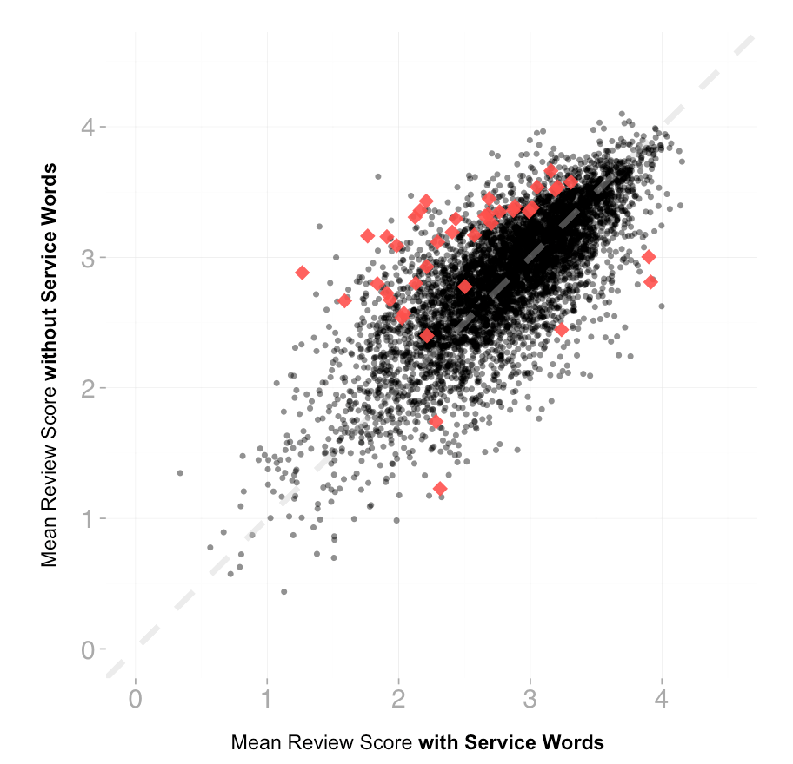
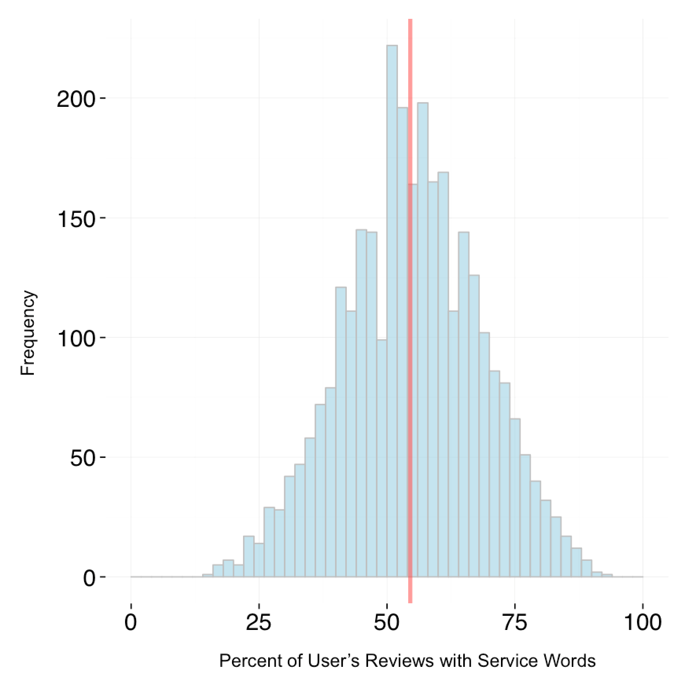
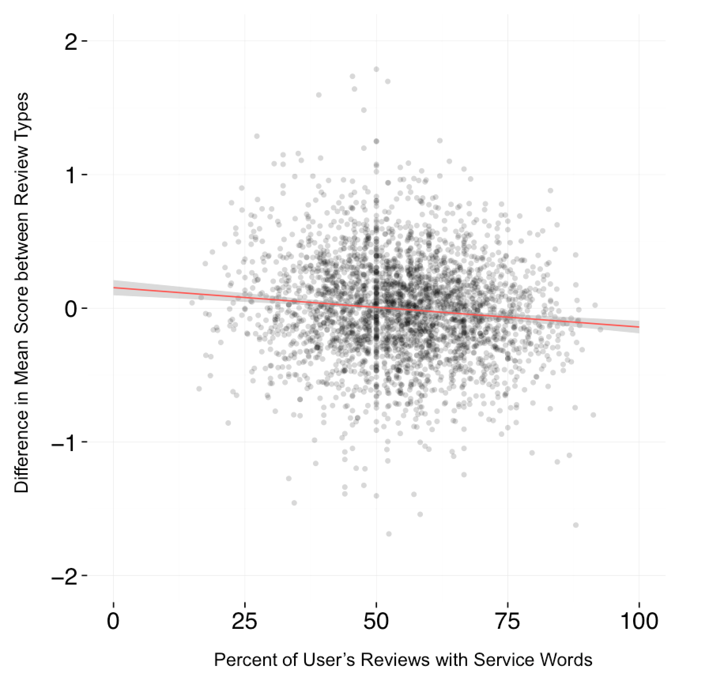
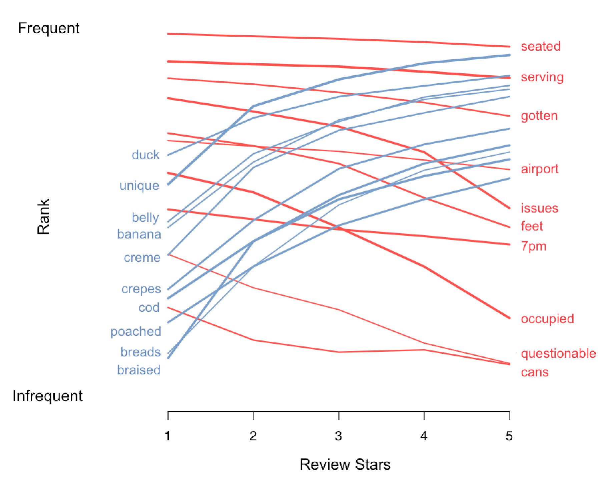
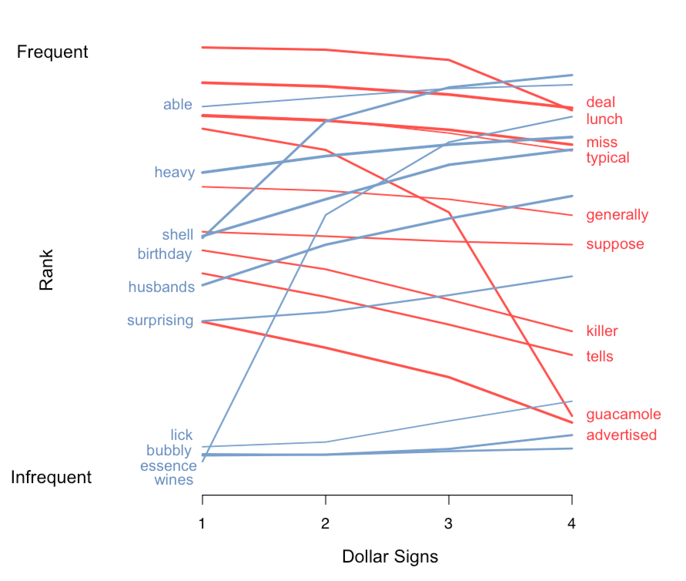

We have all been to a GFBS restaurant: Good Food, Bad Service. A restaurant serving dishes from food heaven, but also staffed with incompetent, inattentive, or overwhelmed servers.
GFBSs are everywhere. Some people want a little love during their dining experience and probably avoid these restaurants. But other people, especially the "foodies" among us, flock to the GFBS like pigeons picking at croissants on the street. Whatever your preference, you probably want to know which restaurants are GFBSs so that you can either find a hidden gem or stay away from a bad experience.
So can we figure out if a restaurant is a GFBS?
Yelp - as awesome as it is - only has one metric for rating a restaurant. The rating of 1 to 5 stars reflects both the quality of the service AND the food (along with whatever else comes to a reviewer's mind). So if a restaurant has a rating of 1 star - we can't tell whether the low score reflects appalling service or disgusting food.
But fear not, as we have discovered a simple way to remedy this problem. Yelp reviewers couple their star rating with a description of their experience. Using this text data combined with the star rating - we have created a way to find these GFBSs. So for you foodies out there - don't be fooled by the 3 star rating - the food at these restaurants may in fact be delicious!
By searching for particular
service words in a review, like “impolite” or “helpful”, we inferred whether a review was based on service. We then compared the rating of the reviews that talked about service, and the rating for the reviews that did not. A restaurant with a lower rating in their service reviews may be a GFBS. Now there's a lot more details, and the full methods and all code are available
here, but one particular issue is worth talking about before we go on.
If a review is a long, rambling oratory, it will have a higher chance of containing a
service word compared to a short, succinct review. This relationship will become a problem in our analysis if there is also a relationship between the length of the review and the rating (confounding!).
And - there indeed is a relationship! Plus it's strong - a correlation of -0.12 (pvalue <1e-15). To avoid this pattern from biasing any of our downstream results, we carefully removed this effect before doing any of our analyses (details in methods).
After correcting for these issues - we can now answer the original question - how many GFBS's are out there? This is what we saw when we compared the reviews with the service words and the reviews without for each restaurant individually:
Businesses with Significant Differences in Ratings for Service Based Reviews and Non-Service Based Reviews

For each restaurant, the average rating for non-service reviews is plotted against the service-related reviews. Red points are the restaurants with significant differences between the two sets of reviews. The red points above the grey dotted line are GFBSs, those that are below the line are BFGSs.
Overall at a false-discovery-rate of 5%, we saw:
click to see the list
You can click the link above to see the list of GFBS restaurants and their actual reviews. You can also
click here to go to our interactive map that visualizes the data that went into our analysis.
A few points about these results. First, we're setting a rather stringent threshold for identifying a business as a GFBS, so there are likely more out there. A false discovery rate of 5% means that we expect 1 in 20 of the businesses we identified (so ~2 in this case) to be false positives, e.g., businesses that are not truly GFBS restaurants. Setting this threshold also will increases the false negative rate. Second, using this method, we can also find out which restaurants are the opposite (BFGSs). We see that there are far more GFBSs than BFGSs (35 GFBSs vs 5 BFGSs). This is no coincidence! We'll explore this more in Analysis 3. Lastly, we also asked whether a certain category of restaurants tended to be a GFBS or BFGS. By testing whether any specific category was over-represented in our lists compared to what we expect from random chance, two categories of restaurants were found to be significantly likely to be GFBS restaurants: Burgers and Pizza.
Now, if you read the reviews with low ratings for GFBS restaurants you'll quickly see that
service was a big issue (click here). Also, notice that "Essence Bakery Cafe" is found twice in the list. That's not a typo. Two independent locations for this brand are GFBS restaurants! If we expand our list to a FDR of 10%, we see that our top GFBS - "Bachi Burger" - also has another branch that performs poorly in their service-based reviews.
In summary, for those of you who live in one of the cities that Yelp provided the data for (Phoenix, Las Vegas, Madison, Waterloo, Edinburgh), this list will help you find those restaurants where the food may actually be better than the rating indicates. And if you happen to be the restaurant owner or manager of a restaurant on this list - you probably want to take a second look at how you're serving your patrons (but pat yourself on the back for the food)!
We've identified restaurants that have strong differences between the ratings of their service-based reviews and the other reviews. We can also ask the same question about individuals - do certain individuals care more about service? Although there is not a significant overall difference between service-based review scores and other review scores when looking across all individuals together (p-value of 0.26), there are 12 reviewers who individually showed significant differences (at a false discovery rate of 5%). Interestingly, the majority of these individuals gave higher ratings if they mentioned service, the opposite trend than we saw with businesses. It seems that there is a small subset of individuals who particularly notice great service and reward it!
Looking more broadly, we then asked the question - what percent of the time do individual reviewers mention service in general? As it turns out, on average a reviewer mentions service in just over half of their reviews (mean of 54.5%). That's a lot!
Frequency of Service Based Reviews Across Individuals

Histogram of the percent of reviews containing service words for each individual. The solid red line indicates the mean percent of reviews containing service words.
There is a lot of variance though in how often reviewers mention service, with some individuals mentioning it less than a quarter of the time and others mentioning it in almost every review. We hypothesized that reviewers who seldom mention service would likely have had very impactful (either good or bad) service experiences that caused them to write about service the few times they mentioned it. To test this idea, we looked for a relationship between the difference in the average ratings of service-based reviews and the non-service reviews with the percent of reviews mentioning service for each individual.
Frequency of Service Based Reviews Across Individuals Correlates Negatively With Difference in Ratings Between Review Types

Scatterplot of the mean for reviews without service words minus the mean for reviews with service words versus percent of reviews with service words for each individual. Solid red line is the regression of the mean review difference on the percent of reviews with service words. Grey shaded area indicates 95% confidence interval.
As shown in the plot - there is a highly significant correlation of -0.10 (p-value of 1.15e-8).
The correlation is negative, meaning that individuals who seldom write about service will tend to rate restaurants with a lower score when giving a service-based review compared to those who consistently write about service. This makes sense. The individuals who rarely comment about service likely only use a service-related word when they had a particularly bad experience, whereas individuals who often rate on service are potentially more likely to only rate on food when it was particularly bad.
As discussed above, we found more GFBSs than BFGSs. This could imply that reviews that mention service may generally have lower ratings than the reviews that don't mention service. We tested this directly by looking across all reviews and businesses jointly. Comparing the scores between service-based reviews and non-service based reviews across all businesses, we found that service-based reviews tended to have a significantly lower rating (p-value = 1.5 e-11). This makes sense because people, at least from our personal experience, enjoy griping about service and raving about food. But what about all other types of words? Are certain words used more frequently when people are writing a good review? We explored this question by testing how the presence or absence of a word in a review can correlate with the score. After looking at every single possible word, there were 1184 words that significantly correlated with the rating (at an FDR of 5%). The top sets of words were rather interesting:
Top 10 words (positively and negatively) correlating with review stars

Rank of word versus review stars for the top ten words whose normalized frequency is most positively and negatively correlated with review stars.
For example, “duck”, “cod”, “poached”, “crepes”, all describe foods that tend to be found in restaurants with higher scores. Is this an indication that these foods may be the key to getting a higher review, or is this all correlation and no causation? We can't tell from this data alone but it's certainly a tempting morself of info to think about! Looking at the set of words that were more frequently used in lower score reviews, we saw words like “airport”, “occupied”, “issues”, “serving”. Note that we see many service-related words (rediscovered in an assumption free manner!), and also“7pm” seemed to be a bad time to mention in a review. We suspect that 7pm tends to be a busy time of the day for restaurants so perhaps people are not receiving the attention or service that they need at the time. Also, not included in the figure but still with a significantly negative correlation, was the word “groupon”. Sounds like giving away groupons may be doing a disservice to a restaurant's rating!
We can also do a similar analysis by associating the use of words with the dollar score. Are certain words used more frequently in more expensive restaurants? Which words are common in reviews of cheaper restaurants?
Top 10 words (positively and negatively) correlating with dollar score

Rank of word versus dollar signs for the top ten words whose normalized frequency is most positively and negatively correlated with dollar signs.
Want to see more significant words?
Click here for the top 50 words most positively and negatively associated with
review stars.
Click here for the top 50 words most positively and negatively associated with
dollar signs.
As expected “wines”, “birthday”, “husbands”, were mentioned more in expensive restaurants, fitting the theme of a special occasion where you would be willing to pay more. On the other side, “deal”, “lunch”, and “typical”, were frequently used in cheaper restaurants.
Here we developed a simple approach to extract information about service from the reviews. This process can be performed with complex machine-learning methods - but we find that our simple approach yields interesting insights!
From these analyses, we learned that service is a major component of restaurant reviews and its influence can easily be seen within the review text. Also, we found that there are patterns of word-usage depending on the review rating and even the cost of the restaurant. We can see now that the simple Yelp star rating for a restaurant can reflect wildly different stories. More than just helping consumers, this type of analysis could be invaluable for restaurants. At GFBSs, cooks can stop tearing their hair out at their Yelp rating and improvements can be made in targeted and effective ways (e.g., hiring more servers for the 7PM dinner rush).
We hope that you explore our analysis and maybe even find new insights through our interactive visualization. Hopefully this project gives you some food for thought along with some hidden food heavens!